Manual de usuario del sistema de reservas Servicio de Bienestar · CONAF
Versión del 25 de noviembre de 2026, para la maqueta de validación
(alvarozvjac.github.io/coipo_sistema-de-reservas). Elaborado por la Unidad de Información y
Análisis (UIA). Personas, RUT, reservas y fotografías son ficticios; las casas y tarifas son las del
llamado de verano 2027. Norma de referencia: Reglamento General de Uso de Casas de Veraneo o Descanso
(propuesta de actualización, octubre 2026).
Contenido
Qué es el sistema y quién lo usa
Ingreso
Encargada regional
Reservas: tablero y listado
Registrar una reserva
Ficha de la reserva y desistimiento
Inventario de las casas
Encargado nacional
Panel nacional
Reservas de todo el país
Cobros
Configuración
Cambiar de etapa
Temporadas altas y sorteo
Etapa 2: trabajadores de CONAF
Reglas principales
Para probar la maqueta
1. Qué es el sistema y quién lo usa
Casas de Veraneo reemplaza las planillas y formularios con que hoy se reservan las casas de veraneo
del Servicio de Bienestar. Toda reserva que se registra con fechas disponibles queda
confirmada en el momento y la persona recibe por correo la ficha de la
reserva: quienes viajan, las direcciones de la casa y su inventario. No hay aprobación
posterior ni pago en efectivo.
Perfiles
Perfil
Qué hace
Encargada regional
Ve la ocupación de todo el país; registra reservas en las casas de su región, a pedido de la persona por cualquier vía (teléfono, correo, presencial, WhatsApp u otra); registra desistimientos; mantiene el inventario de las casas de su región.
Encargado nacional
Todo lo anterior en cualquier casa del país, más el Panel nacional, los Cobros (descuentos por planilla y transferencias), la Configuración del sistema y las temporadas altas con su sorteo.
Trabajador/a de CONAF
Solo en la etapa 2: busca casas, reserva a su nombre, postula al sorteo de temporada alta y ve sus reservas.
Las dos etapas
El encargado nacional elige la etapa en Configuración › Etapa (sección 4.5).
Etapa
Cómo funciona
Etapa 1 · Marcha blanca
Solo las encargadas regionales y el encargado nacional registran reservas, a pedido de la persona. Verano e invierno se registran como cualquier fecha, por orden de llegada.
Etapa 2 · Abierto a trabajadores
Además, los trabajadores de CONAF (afiliados/as, no afiliados/as y plazo fijo) ingresan con su cuenta institucional y reservan a su nombre. Las temporadas altas se asignan por postulación y sorteo. Jubilados/as y funcionarios de otros servicios públicos siguen pidiéndolo a la encargada.
Cómo se paga
Quién
Forma de pago
Funcionarios/as de CONAF (afiliados/as activos/as y no afiliados/as)
Descuento por planilla, hasta en 3 cuotas en la reserva directa.
Funcionarios/as de CONAF a plazo fijo
Descuento por planilla o transferencia electrónica.
Afiliados/as jubilados/as y funcionarios/as de otros servicios públicos
Transferencia electrónica antes de llegar. La reserva queda confirmada al registrarla; la transferencia queda pendiente hasta que el encargado nacional registra en Cobros que llegó.
2. Ingreso
Se ingresa con la cuenta institucional a través del COIPO IAM, que administra el
acceso a las aplicaciones de CONAF. El perfil (encargada regional, encargado nacional o trabajador/a)
y la región de la encargada salen del rol que el IAM le asigna en esta aplicación: no se eligen en
la pantalla.
En la pantalla de ingreso, pulse Ingresar con COIPO IAM.
En la pantalla del IAM escriba su usuario y contraseña y pulse ingresar.
El IAM lo devuelve al sistema, a la pantalla de inicio de su perfil.
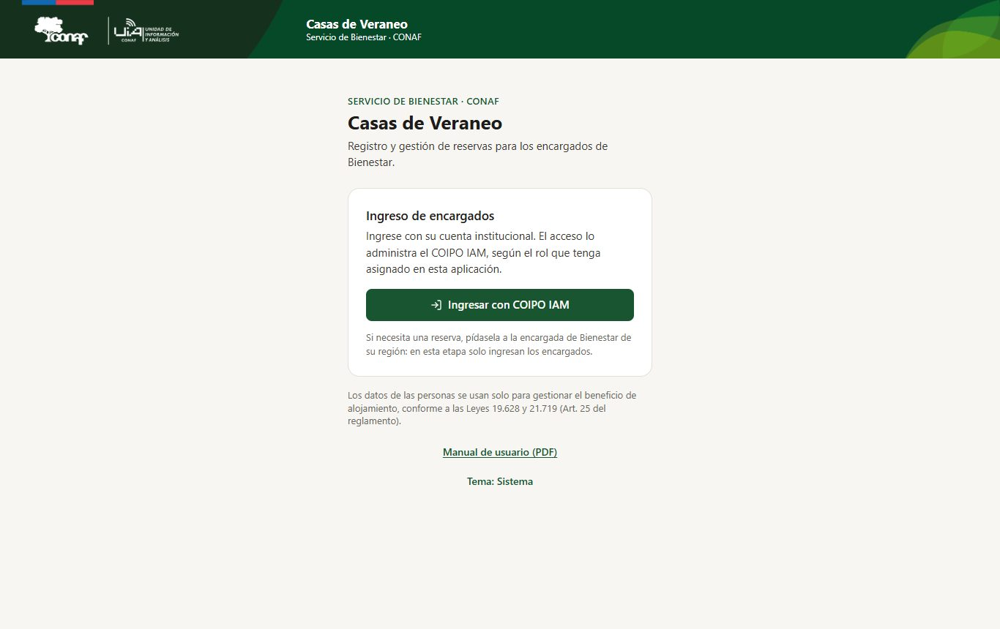
Figura 1. Pantalla de ingreso. Desde aquí también se descarga este manual.
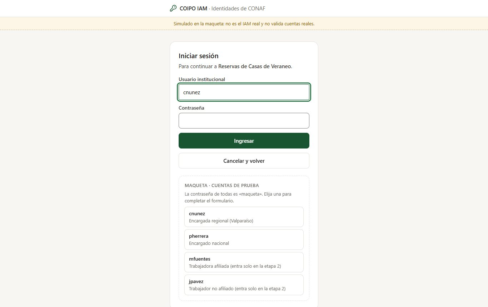
Figura 2. Pantalla del COIPO IAM. En la maqueta está simulada.
Una cuenta sin rol en esta aplicación ve el aviso «Su cuenta no tiene acceso a esta aplicación» y no
queda con sesión. En la etapa 1 eso le ocurre a todo trabajador/a; en la etapa 2 los trabajadores de
CONAF entran con su perfil.
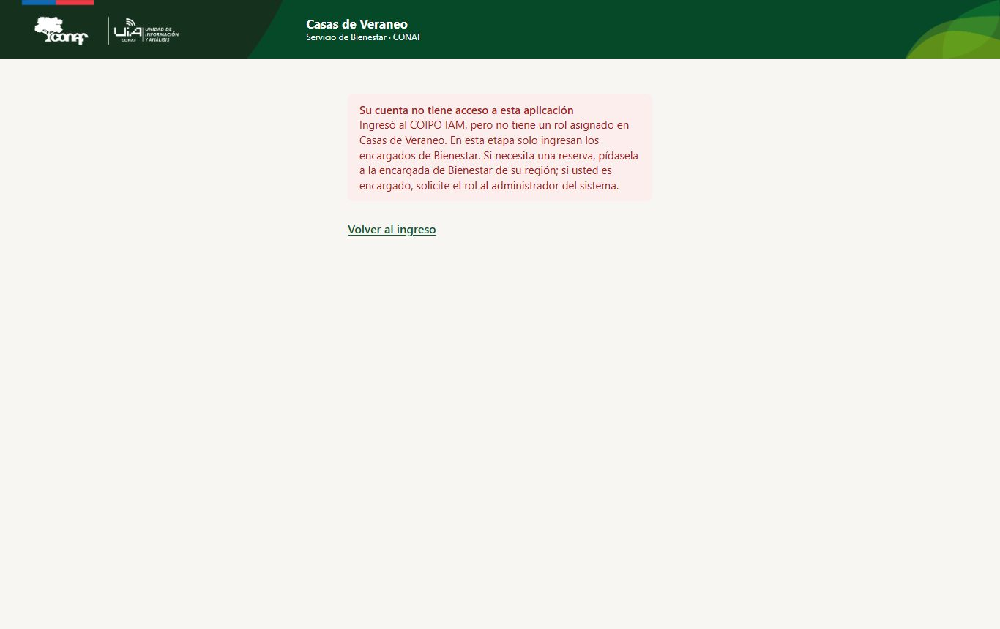
Figura 3. Una cuenta sin rol en la aplicación, en la etapa 1.
El pie de cada pantalla tiene el enlace a este manual y el botón Tema, que
alterna entre el tema del sistema, claro y oscuro. Para salir, use el botón junto a su nombre, arriba a
la derecha.
3. Encargada regional
La encargada regional entra a Reservas. Su menú tiene dos opciones: Reservas e Inventario.
3.1 Reservas: tablero y listado
Arriba están el buscador (por nombre, RUT o código de reserva), el filtro de región y el de personas.
Por defecto se ve la región de la encargada, pero puede elegir cualquier otra o todo el país:
las demás regiones son solo consulta.
El tablero de ocupación muestra cuatro semanas desde hoy, una fila por casa. Las
reservas confirmadas o en curso van en verde, las finalizadas en gris y las fechas bloqueadas con
rayas. Hoy e Ir a la fecha mueven el período.
Toque una reserva para abrir su ficha y gestionarla.
Para registrar, toque la primera noche libre y luego la última: se abre el registro con la casa y las fechas ya puestas.
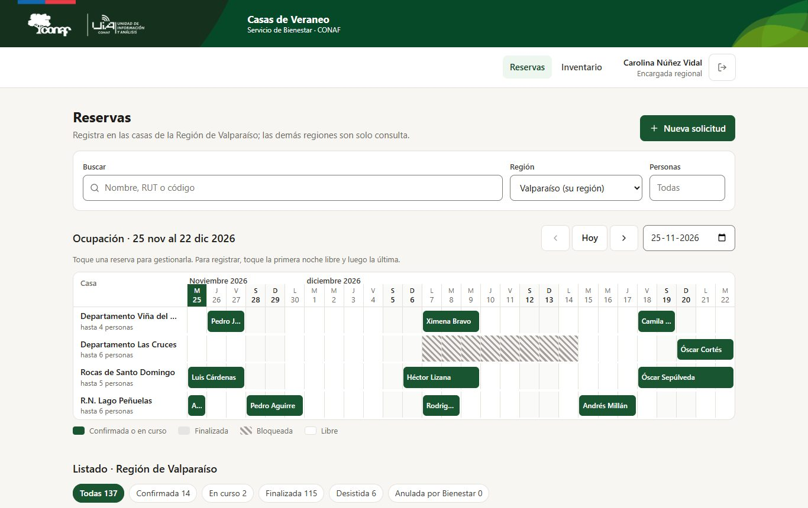
Figura 4. Reservas: buscador, filtros y tablero de ocupación de la región.
Bajo el tablero, el listado trae todas las reservas de la región con su estado:
Confirmada, En curso, Finalizada, Desistida o Anulada por Bienestar. Las pestañas filtran por estado y
muestran cuántas hay; el selector filtra por casa. Cada fila muestra las fechas, la casa, la persona,
la vía por la que pidió la reserva y el total.
Figura 5. Listado de reservas de la región, con las pestañas por estado.
3.2 Registrar una reserva
Se registra lo que una persona pidió por cualquier vía, solo si hay disponibilidad.
El registro se hace en un panel lateral que se abre con Nueva solicitud o
marcando las noches en el tablero.
Paso 1. Casa y fechas. Elija la casa (solo las de su región) y las fechas de llegada y salida. La llegada es desde mañana.
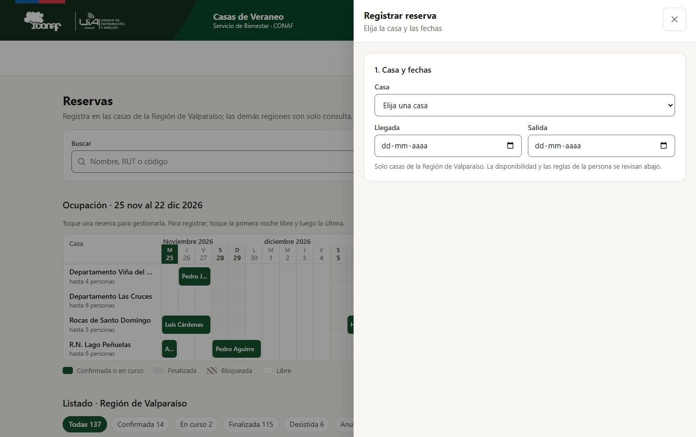
Figura 6. Panel de registro: casa y fechas.
Paso 2. A nombre de quién. Indique si es funcionario/a de CONAF o afiliado/a
jubilado/a (se busca por RUT con Buscar en la nómina) o funcionario/a de
otro servicio público (se escriben sus datos: nombre, RUT, servicio, región y contacto).
Paso 3. Antecedentes. El panel muestra las reservas de la persona de los últimos 12
meses y las próximas, y los avisos que corresponden (por ejemplo, que ya tiene una reserva ese mes).
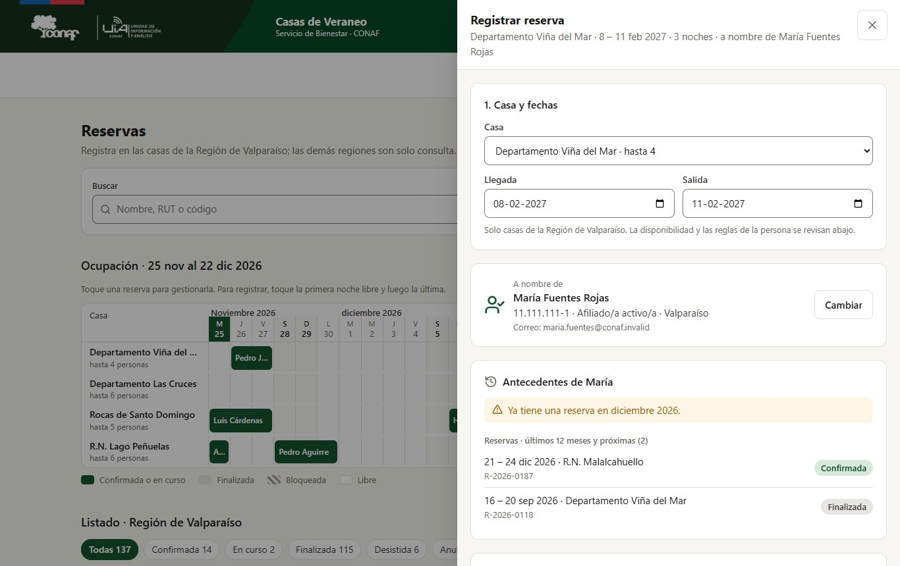
Figura 7. La persona encontrada en la nómina y sus antecedentes.
Paso 4. Quiénes van. La persona a cargo en la casa y cada acompañante, con nombre,
edad y relación, sin pasar la capacidad de la casa. Si viaja un perro de asistencia (Ley 20.422), se
marca y se adjuntan su credencial y certificado sanitario.
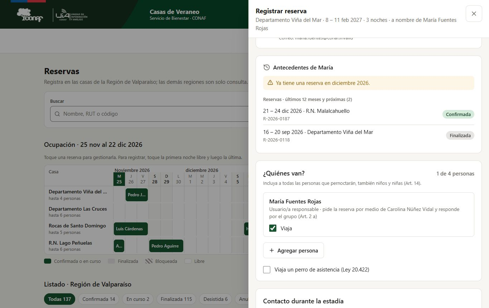
Figura 8. Quiénes van.
Contacto y pago. Teléfono y correo para la estadía (al correo llega la ficha). La
forma de pago depende de quién es la persona (sección 1): con descuento por planilla se eligen las
cuotas y se marca que la persona autorizó el descuento.
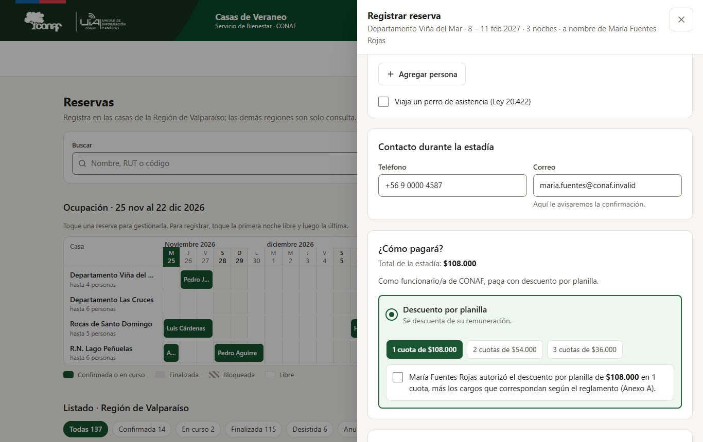
Figura 9. Contacto y forma de pago con las cuotas del descuento por planilla.
Antes de enviar. El panel resume qué pasará: la reserva queda confirmada y se envía
la ficha; hasta qué día se puede desistir sin costo; y las condiciones de uso de la casa. Indique la
vía por la que la persona pidió la reserva y declare que ella se la pidió y que
conoce y acepta el reglamento.
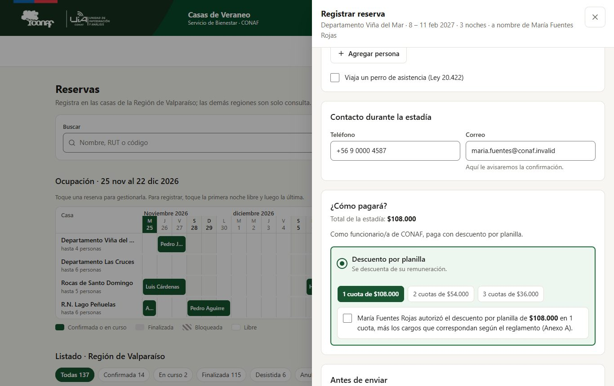
Figura 10. Antes de enviar: confirmación, plazo para desistir y vía de la solicitud.
3.3 Ficha de la reserva y desistimiento
Al registrar, o al tocar una reserva en el tablero o el listado, se abre su ficha: código, casa y
dirección, fechas con horario de ingreso y salida, quienes viajan, total y forma de pago. Si paga por
transferencia, trae los datos para transferir con la glosa que debe usar.
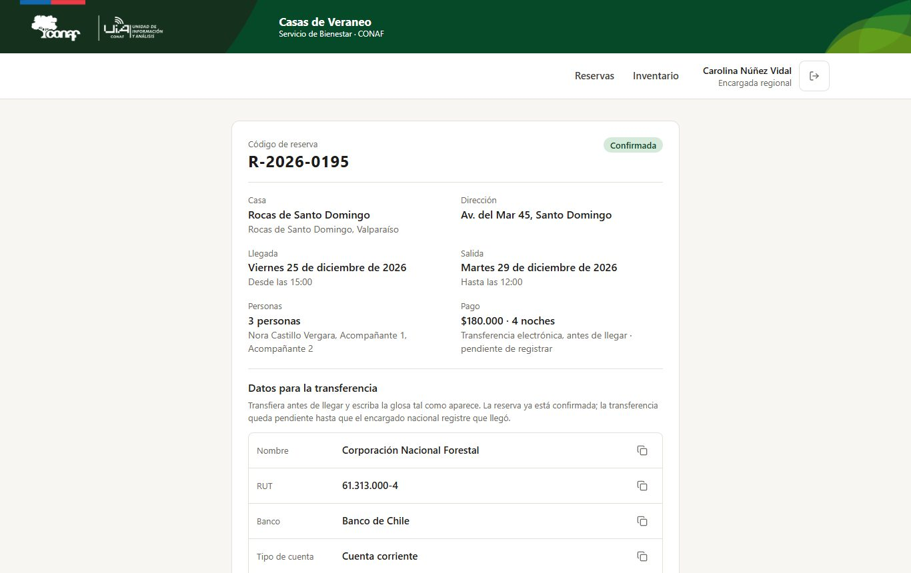
Figura 11. Ficha de una reserva pagada por transferencia (R-2026-0195).
Descargar ficha (PDF) genera el documento que recibe la persona, con el acta para el ingreso y la salida.
El inventario de la casa aparece al final: la persona tiene 12 horas desde el ingreso para informar daños o faltantes (Art. 13).
Registrar desistimiento anula la reserva a pedido de la persona. Si desiste con al menos 10 días hábiles de aviso no tiene costo; después, o si no se presenta, paga la estadía completa, salvo fuerza mayor acreditada.
3.4 Inventario de las casas
En Inventario la encargada mantiene el inventario de cada casa de su región, por
secciones (mobiliario, equipamiento, menaje, ropa de cama…), con cantidad, estado (bueno, regular o
malo) y observación. Cada vez que guarda se crea una versión nueva, y la ficha actualizada se envía
al correo de cada reserva confirmada que aún no comienza.
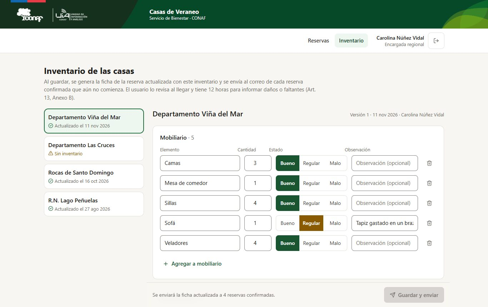
Figura 12. Inventario de las casas de la región.
4. Encargado nacional
El menú del encargado nacional tiene Panel, Reservas, Cobros y Configuración; en la etapa 2 se agrega Temporadas.
4.1 Panel nacional
Resume el día: transferencias por registrar, reservas registradas en los últimos 7 días, llegadas de
hoy y mañana y la ocupación nacional de los próximos 30 días. Requiere atención
reúne lo que hay que resolver: pagos anticipados sin registrar con llegada en 7 días, extintores
vencidos o por vencer, casas sin inventario y devoluciones pendientes. Abajo están las llegadas y
salidas de hoy y mañana, con el teléfono de contacto. El subtítulo indica la etapa vigente.
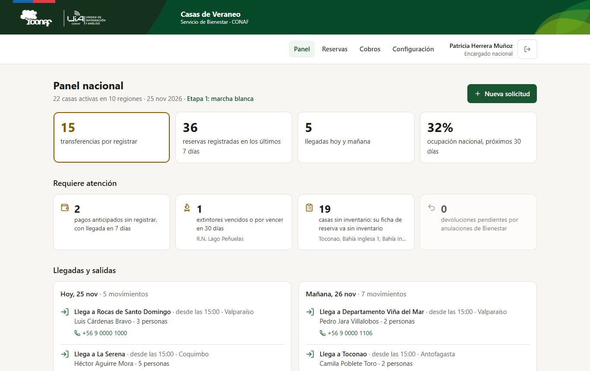
Figura 13. Panel nacional.
4.2 Reservas de todo el país
Es la misma pantalla que la de la encargada (sección 3.1), con todo el país y la posibilidad de
registrar en cualquier casa. Lo que registra el encargado nacional también queda
confirmado al registrarlo.
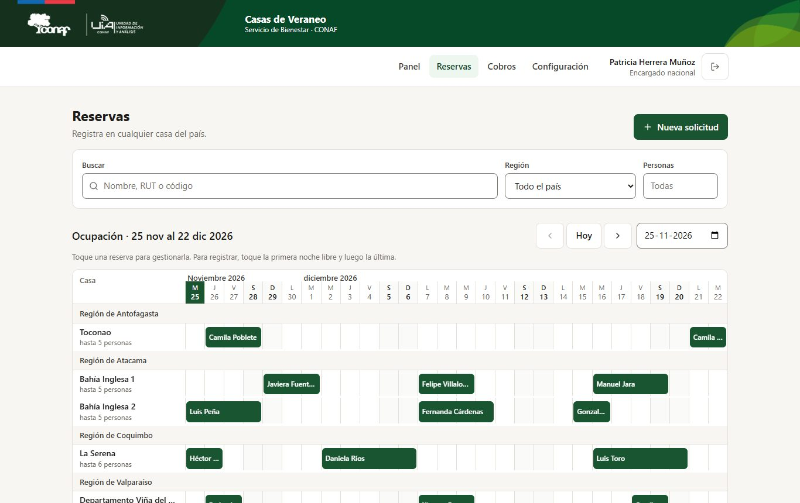
Figura 14. Reservas de todo el país.
4.3 Cobros
Panel de descuentos. Por mes: el total a descontar por planilla (con la cantidad de descuentos y personas) y las transferencias del mes, recibidas y pendientes.
Descargar CSV para Remuneraciones: la nómina de descuentos del mes.
Descargar reporte de cobranza: el detalle de lo cobrado.
Marcar como informada: deja constancia de que la nómina se envió a Remuneraciones.
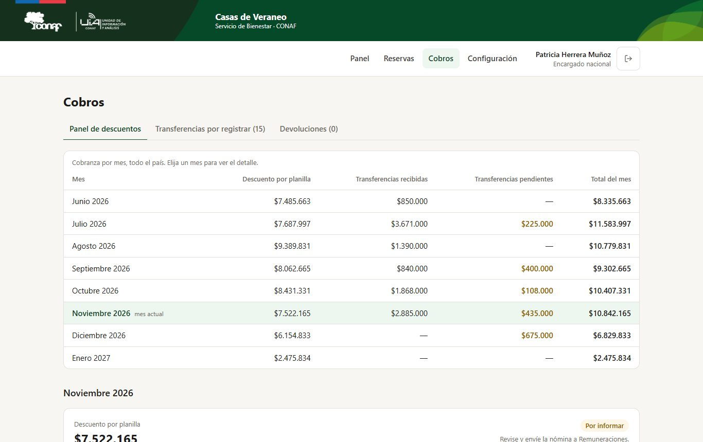
Figura 15. Cobros: panel de descuentos del mes.
Transferencias por registrar. Las transferencias por comprobar de todo el país:
estadías confirmadas que deben pagarse antes de llegar y cargos por desistir fuera de plazo. Cuando el
dinero llega, Registrar transferencia con el número de operación: queda en
el reporte de cobranza. Devoluciones lista lo que hay que devolver por reservas que
Bienestar anuló (por ejemplo, por un bloqueo de fechas).
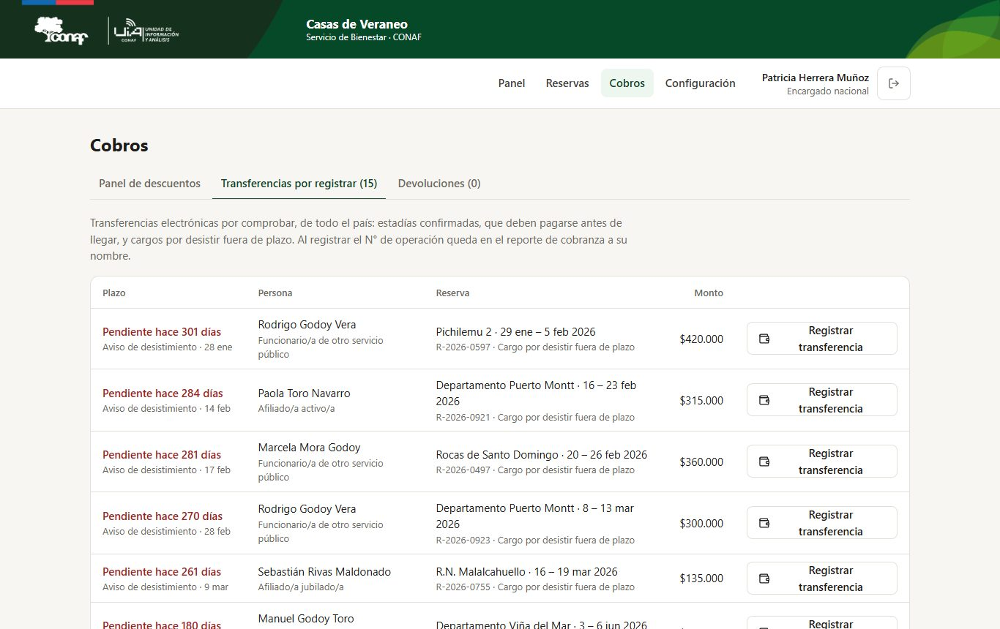
Figura 16. Cobros: transferencias por registrar.
4.4 Configuración
La configuración tiene ocho pestañas.
Casas. Las casas en servicio con su capacidad, tarifa, estado del inventario y otras
direcciones (retiro de llaves, estacionamiento). Retirar del sistema es
para una casa que deja de ofrecerse sin fecha de término: deja de aparecer y sus reservas futuras se
anulan con aviso. Para cerrar solo algunas noches se usan los bloqueos.
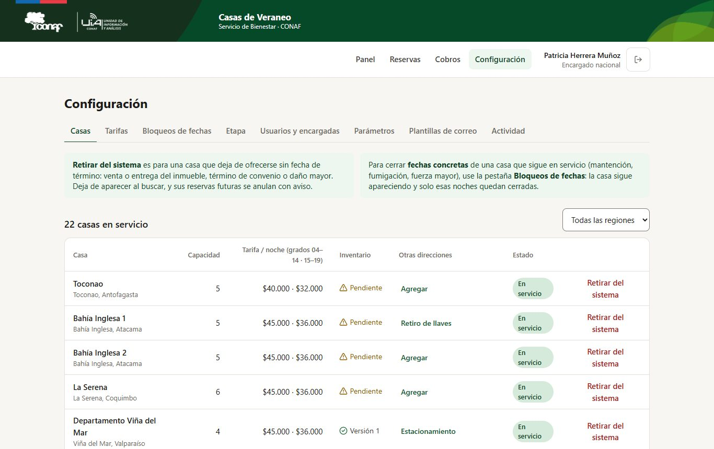
Figura 17. Configuración › Casas.
Tarifas. Tarifa por noche de cada casa en dos tramos según el grado del
trabajador/a (04 a 14 y 15 a 19). Se pueden digitar en pantalla o cargar
una planilla Excel o CSV con el formato tipo. Los cambios rigen para las reservas nuevas;
las ya hechas mantienen su tarifa.
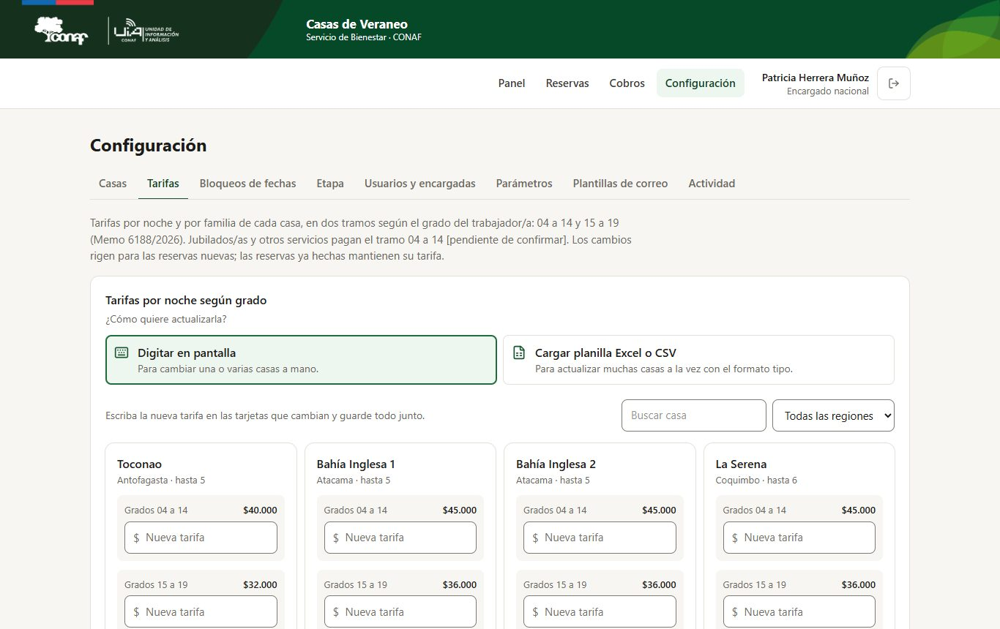
Figura 18. Configuración › Tarifas.
Bloqueos de fechas. Cierra noches concretas de una casa por mantención o fuerza
mayor, con su motivo. Si ya había reservas en esas fechas, se anulan, se avisa a cada persona y se
registra la devolución de lo pagado (Art. 11).
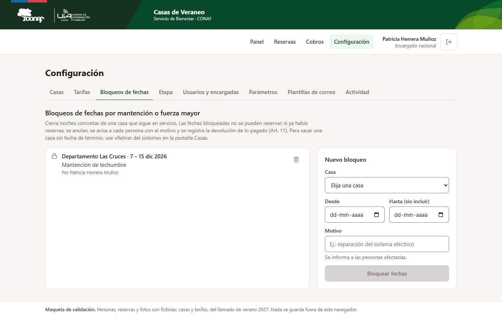
Figura 19. Configuración › Bloqueos de fechas.
Usuarios y encargadas. Quién tiene acceso, con qué rol y región. La lista la entrega
el COIPO IAM: para dar o quitar acceso a una encargada se pide en el IAM, no aquí.
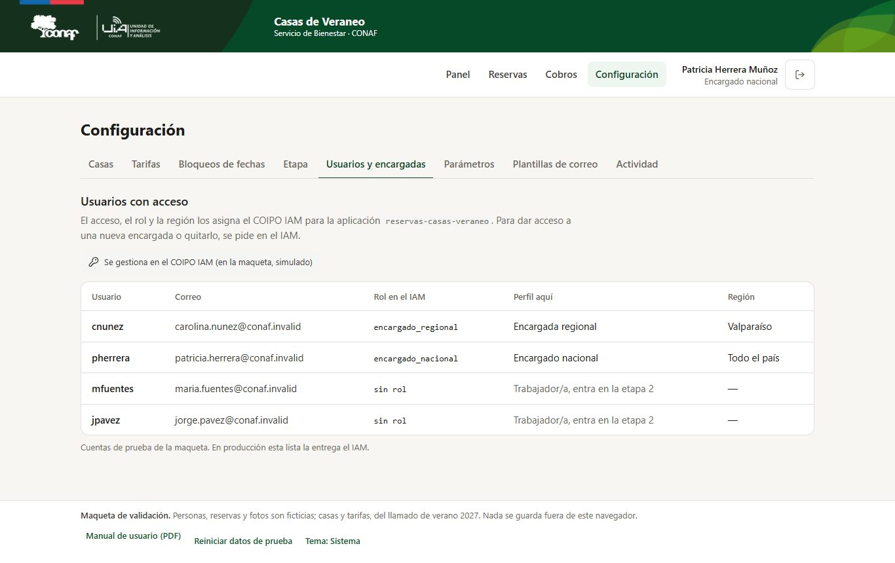
Figura 20. Configuración › Usuarios y encargadas.
Parámetros. Los valores del reglamento que usa el sistema (sección 6). Cada cambio
pide desde cuándo rige y la resolución, memo o acuerdo que lo respalda, y queda en el historial. Lo
ya registrado conserva lo que se le aplicó.
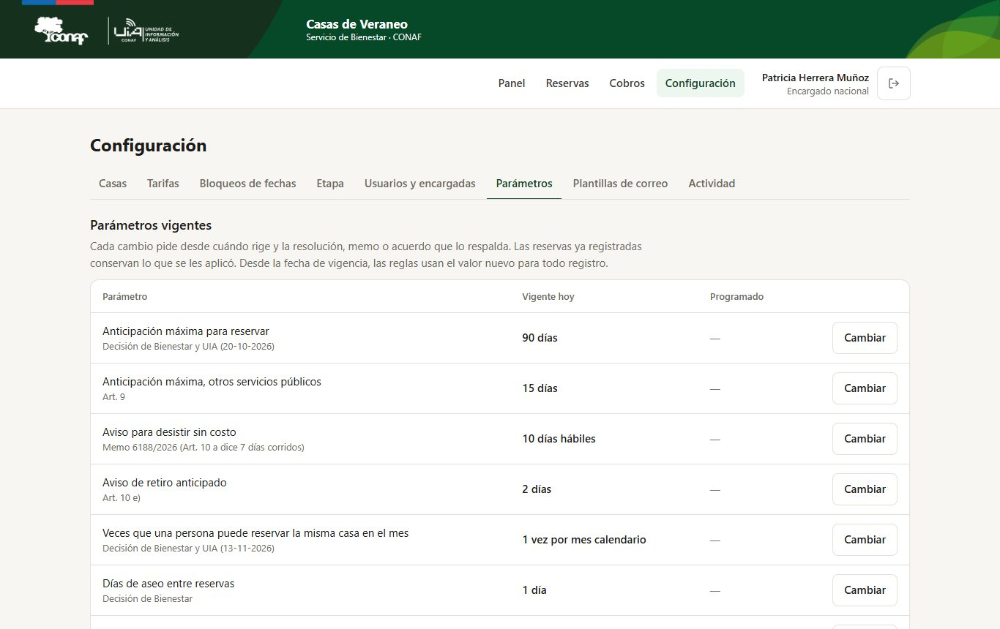
Figura 21. Configuración › Parámetros.
Plantillas de correo. El texto de los correos que envía el sistema: la ficha de la reserva, los datos para transferir, el desistimiento registrado y la anulación por Bienestar.
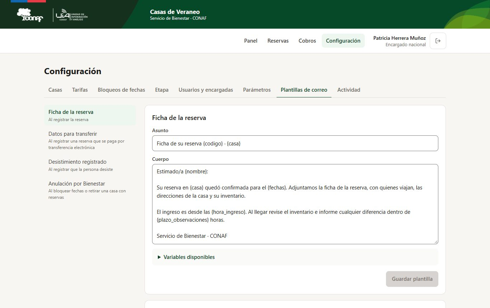
Figura 22. Configuración › Plantillas de correo.
Actividad. Lo que hicieron los encargados en el sistema, con fecha, persona y
detalle, filtrable por área y persona y descargable en CSV. Las acciones automáticas no aparecen.
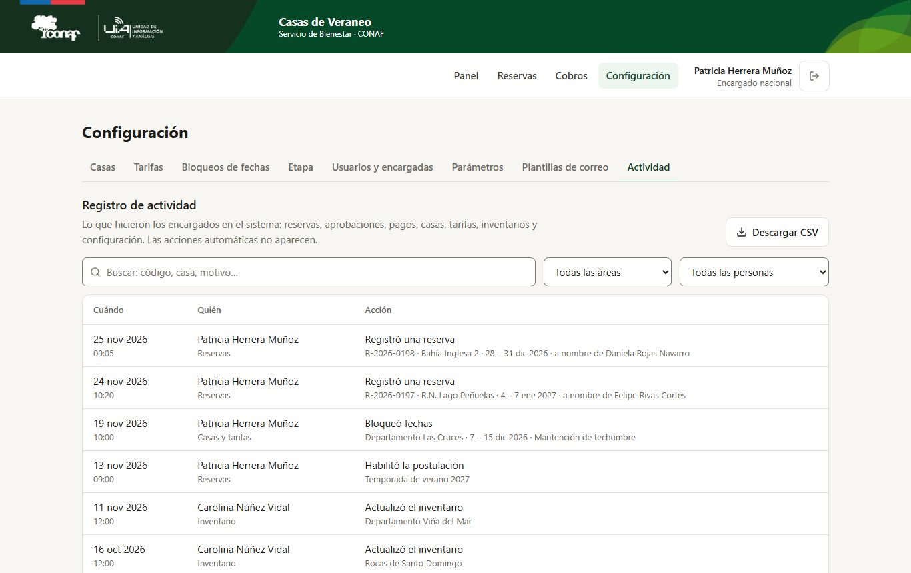
Figura 23. Configuración › Actividad.
4.5 Cambiar de etapa
En Configuración › Etapa se ve la etapa vigente y su historial.
Cambiar de etapa pide la nueva etapa, desde cuándo rige (hoy o una fecha
futura) y el documento que la respalda. Lo ya registrado no cambia.
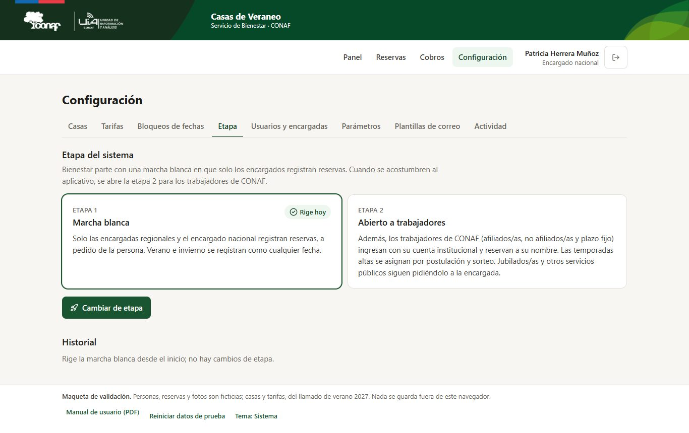
Figura 24. Configuración › Etapa, en la marcha blanca.
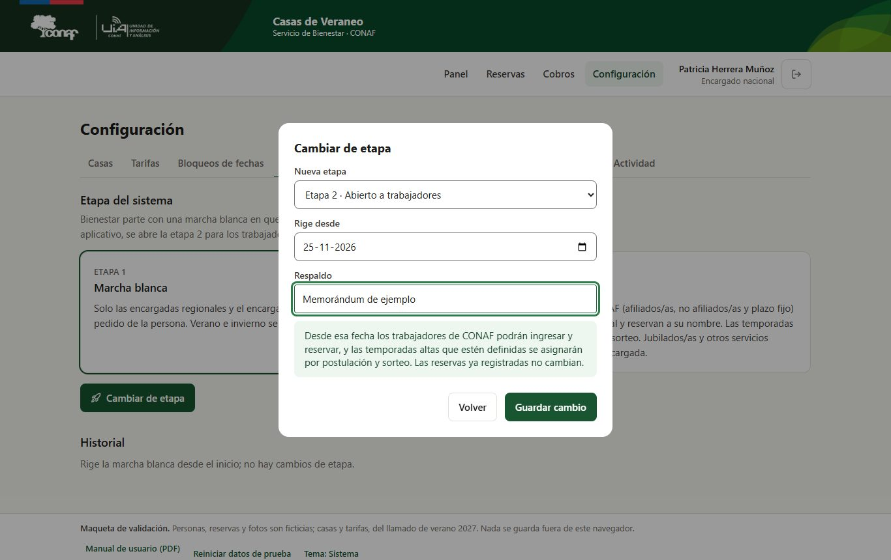
Figura 25. El cambio a la etapa 2, con su respaldo.
4.6 Temporadas altas y sorteo (etapa 2)
En la etapa 2, verano e invierno se asignan por sorteo en turnos fijos y sus fechas quedan cerradas a
la reserva directa (Art. 6). En Temporadas el encargado nacional:
crea y edita cada temporada (Nueva temporada, Editar): fechas, largo de los turnos, calendarios y cierre de la postulación;
abre la postulación con Habilitar postulación: hasta entonces nadie puede postular;
sigue el sorteo en curso: postulaciones, turnos ofrecidos, turnos con postulantes y postulantes por cupo;
al cerrar la postulación, pulsa Realizar sorteo. Las vacantes que queden se pueden reservar directo.
Los trabajadores postulan desde el aplicativo. Las postulaciones de jubilados/as, o de quien lo pida,
las registran los encargados en «Registrar postulación», donde también se retira una postulación.
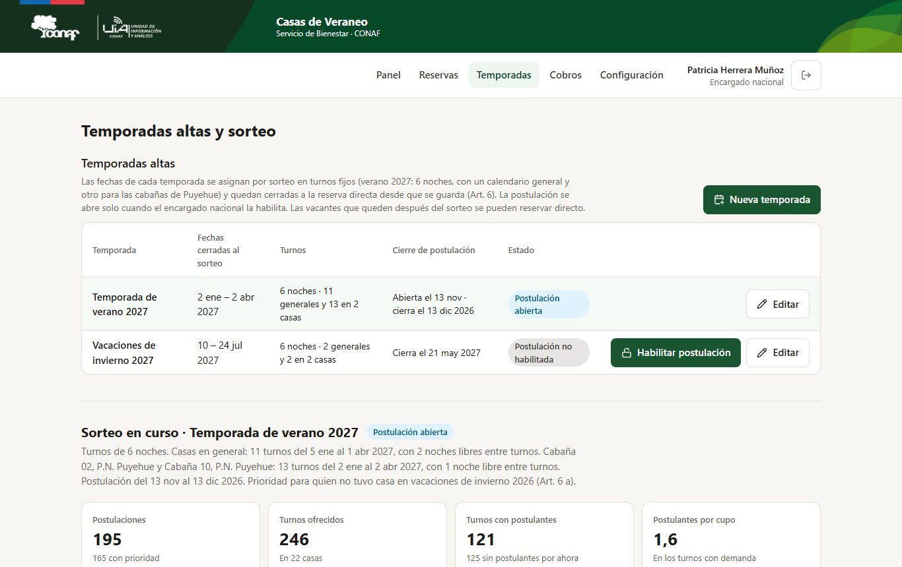
Figura 26. Temporadas altas y sorteo.
5. Etapa 2: trabajadores de CONAF
Desde que rige la etapa 2, los trabajadores de CONAF (afiliados/as, no afiliados/as y plazo fijo)
ingresan con su cuenta institucional. Su menú tiene Reservar y Mis
reservas.
Reservar. Las casas por región, con hasta 90 días de anticipación. Si hay una
temporada alta con la postulación abierta, un aviso lo dice y lleva a postular.
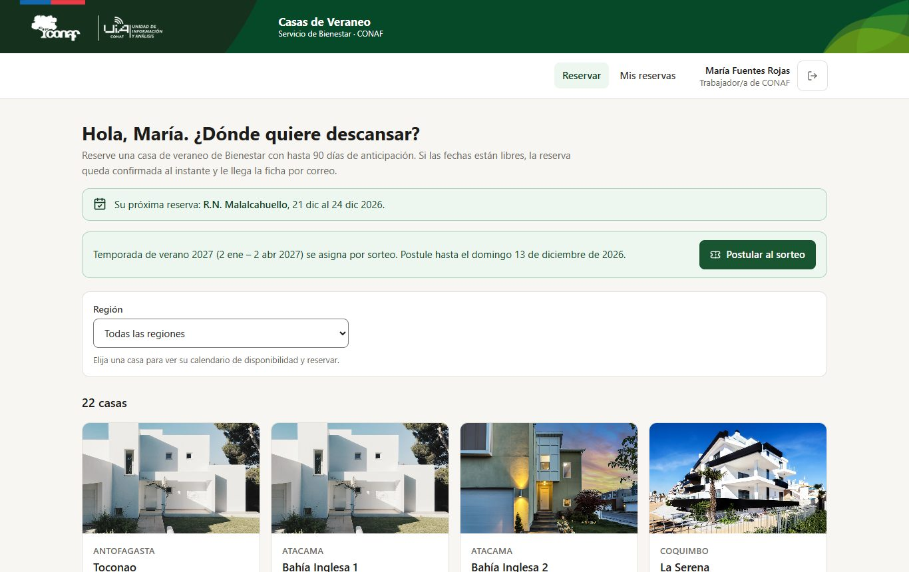
Figura 27. Inicio del trabajador/a: casas por región.
Ficha de la casa. Fotografías, descripción, lo que incluye, lo que hay cerca, las
condiciones de uso y la tarifa según su grado. En el calendario se marca la llegada y la salida y se
pulsa Reservar estas fechas: se completan quienes van, el contacto y el
pago, se acepta el reglamento y, si las fechas siguen libres, la reserva queda confirmada al instante
y la ficha llega por correo.
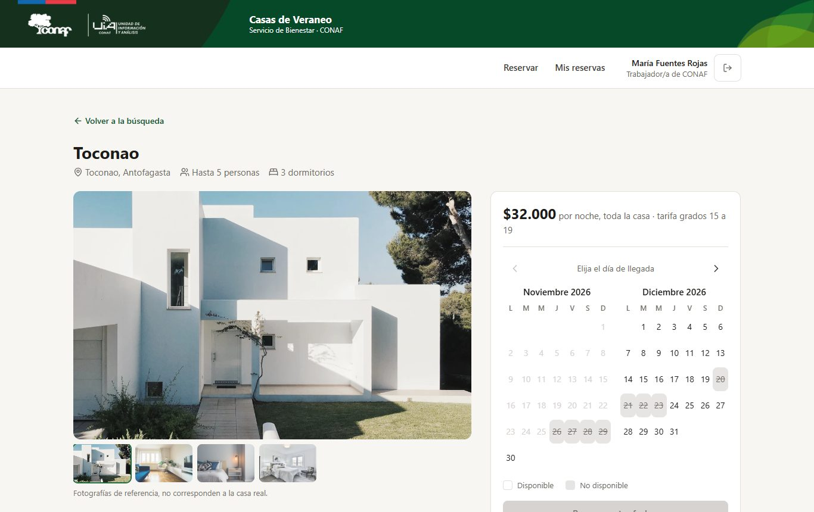
Figura 28. Ficha de la casa con el calendario de disponibilidad.
Postular al sorteo. Se elige la temporada, la casa y el turno (se ve cuántas
personas ya postularon a cada uno), las personas y el contacto, y se autoriza el descuento por
planilla en cuotas si se adjudica.
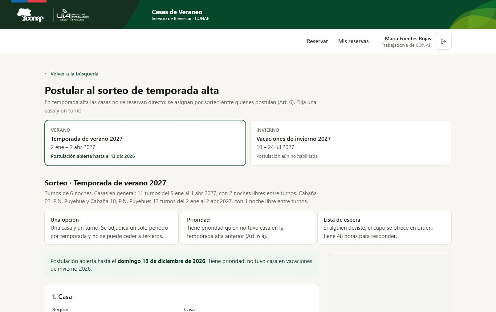
Figura 29. Postulación al sorteo de temporada alta.
Mis reservas. Las próximas y las anteriores, con su estado, y las postulaciones con
su resultado. Desde Ver detalle se abre la ficha y se puede desistir.
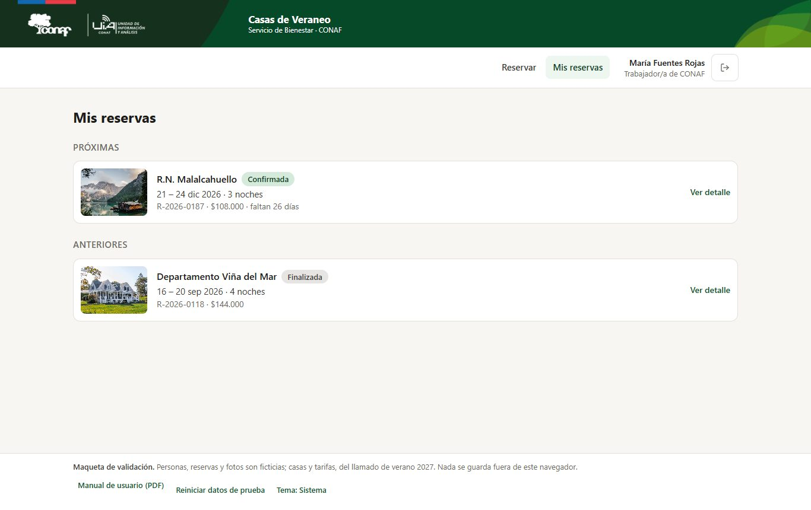
Figura 30. Mis reservas.
6. Reglas principales
Valores con que parte el sistema. El encargado nacional los cambia en Configuración ›
Parámetros, con vigencia y respaldo; lo que muestre esa pestaña es lo que rige.
Regla
Valor
Anticipación máxima para reservar
90 días
Anticipación máxima para funcionarios/as de otros servicios públicos (Art. 9)
15 días
Aviso para desistir sin costo
10 días hábiles antes de la llegada (Memorándum 6188/2026)
Veces que una persona puede reservar la misma casa
1 por mes calendario
Cuotas del descuento por planilla en la reserva directa
hasta 3
Turno de temporada alta (etapa 2)
6 noches, pagadas en 6 cuotas
Días de aseo entre reservas
1
Ingreso y salida (Art. 12)
desde las 15:00 · hasta las 12:00
Plazo para informar daños o faltantes (Art. 13)
12 horas desde el ingreso
Aviso de retiro anticipado (Art. 10 e)
2 días; sin aviso se cobra el período completo
Noches liberadas por matrimonio o acuerdo de unión civil (Art. 20)
3, una vez, entre marzo y diciembre; se solicitan a la encargada regional
Condiciones de uso de la casa
La reserva es personal e intransferible: no se puede ceder ni subarrendar (Art. 8).
No puede pernoctar más gente que la autorizada en la reserva; cada persona adicional paga la tarifa con 50 % de recargo (Art. 14).
No se permiten mascotas, salvo perros de asistencia informados en la reserva (Art. 15).
Prohibido fumar en interiores y encender fuego fuera de lugares habilitados; cierre el gas al salir (Art. 16).
Descanso entre las 22:00 y las 08:00 y respeto del reglamento del condominio (Art. 17).
Los datos de las personas se usan solo para gestionar el beneficio de alojamiento, conforme a las
Leyes 19.628 y 21.719 (Art. 25 del reglamento).
7. Para probar la maqueta
La maqueta es una demostración, no el sistema en operación. Todo lo que se haga queda solo en el
navegador de quien la usa; Reiniciar datos de prueba, en el pie de página, vuelve
todo al estado inicial.
Cuentas del IAM simulado
La contraseña de todas es maqueta.
Usuario
Perfil
cnunez
Encargada regional de Valparaíso
pherrera
Encargado nacional
mfuentes
Trabajadora afiliada: sin acceso en la etapa 1; trabajadora en la etapa 2
jpavez
Trabajador no afiliado: sin acceso en la etapa 1; trabajador en la etapa 2
RUT de prueba para registrar
RUT
Persona
11.111.111-1
María Fuentes Rojas, afiliada
22.222.222-2
Paula Ortiz Cárcamo, plazo fijo
33.333.333-3
Hernán Soto Valenzuela, jubilado
77.777.777-7
Nora Castillo Vergara, jubilada; paga por transferencia
Son los RUT de prueba de Clave Única: ninguna persona real tiene un RUT de esa forma. Los correos de
las personas ficticias terminan en .invalid, un dominio que no existe. Una reserva de
ejemplo pagada por transferencia y pendiente de registrar es la R-2026-0195 (Valparaíso).
En un computador, el botón flotante Vista celular, abajo a la izquierda, muestra la
maqueta dentro de un marco de teléfono de 390 × 844 px. Se cierra con «Cerrar» o con Esc.